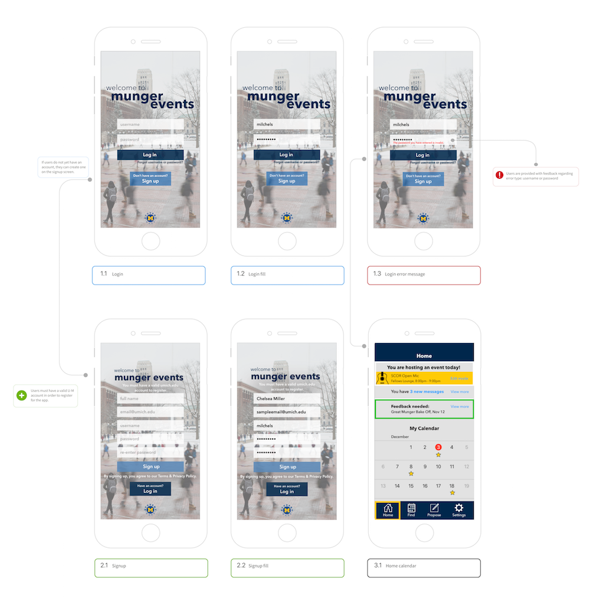
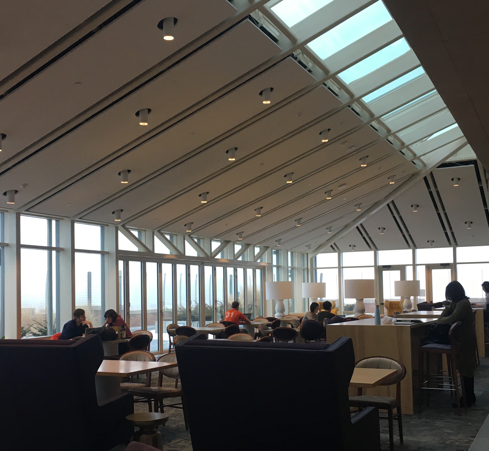
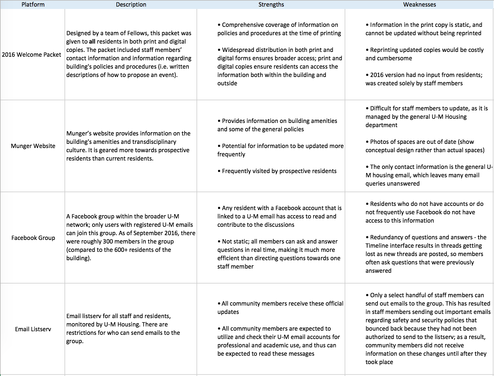
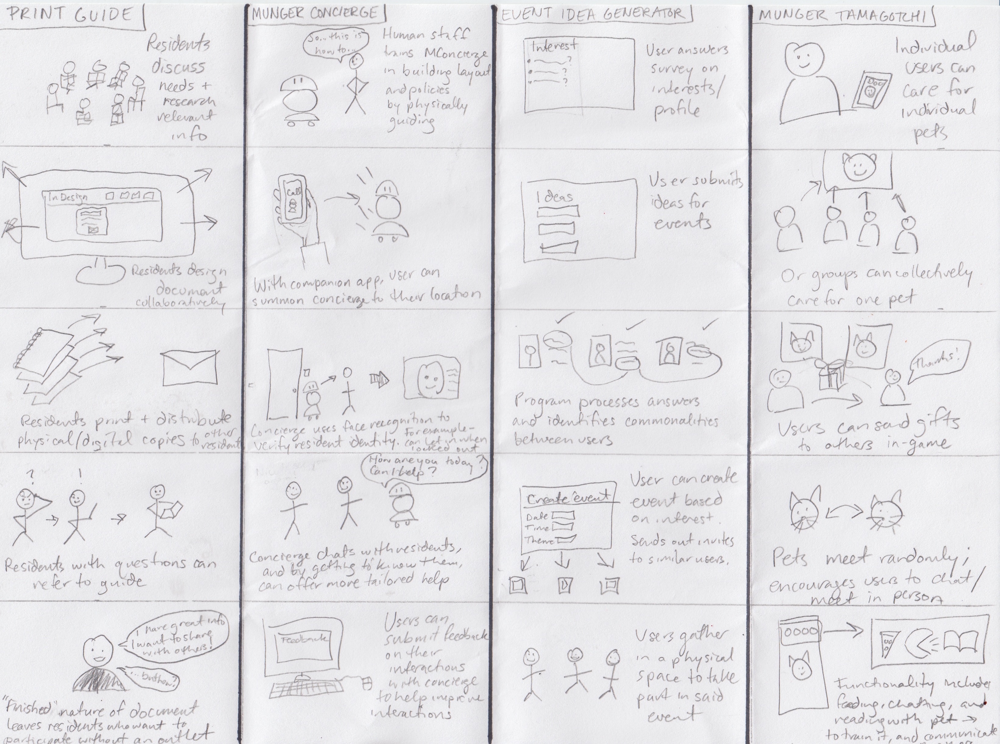
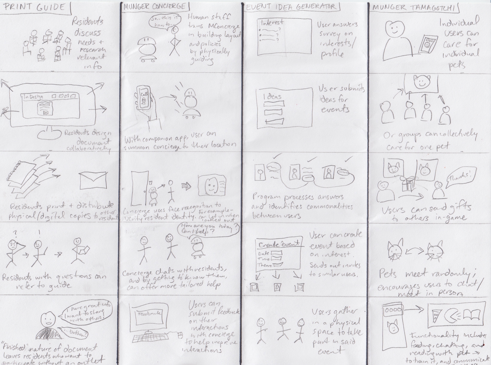
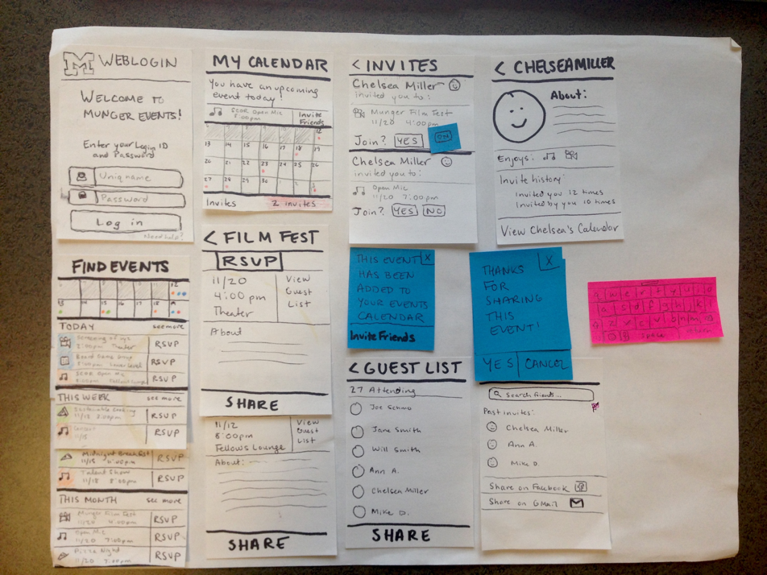

MUNGER EVENTS
Facilitating transdisciplinary collaboration at the Munger Graduate Residences.

Timeline: September – December 2016
Methods: Interviews, Comparative Analysis, Personas, Sketching, Storyboarding, Prototyping
My Role: Interaction Designer
I was the sole designer of this prototype, which I created for the final project of my Introduction to Interaction Design course at UMSI. While this was a solo project, my design process was greatly enhanced by feedback from my classmates and instructors.
Overview
Munger residents studying in one of the building's common spaces.
Munger Events is a prototype for a mobile application that facilitates collaboration at the Munger Graduate Residences. Munger is a residential hall for graduate and professional students at the University of Michigan that encourages its diverse population to connect across disciplines in academic and social endeavors.
I was motivated to create this platform while serving the community as a Coleman-Munger Fellow representing the School of Information. In my position, I acted as both a residential advisor as well as a program coordinator. I sought to empower staff and community members alike to develop, promote, and evaluate programs that would foster academic and social collaboration within this unique, diverse population.
Phase I: Discovery
Interviews and Competitive Analysis
First, I interviewed 2 residents and 2 staff members to better understand their views on the current event planning process, and to identify platforms they were using to either share or receive information about the building, the community model, or its events. I focused my competitive analysis on the four most frequently mentioned platforms, and evaluated the strengths and weaknesses of each.
In conversation with staff and residents, I discovered that several types of questions about events and programming at Munger tended to rise to the surface. I found that these themes were echoed by recurring questions posted on the Munger Facebook group, which I investigated in more depth:
Question Type 1: "What’s going on tonight?"
Because there is no central resource for residents to view or learn more about events going on in the building at any given time, they are often unsure whether certain events are closed/private functions, or whether they are open to all residents.
Question Type 2: "How can I share my event with the community?"
The Munger Facebook group is currently the widest platform residents can use to promote their programs. However, not every resident is a member of the group, and users have experienced difficulties utilizing Facebook events as a central resource for community event sharing.
Question Type 3: "Will anyone attend my event?"
As a new community, Munger collectively has a limited amount of data and experience to consult when considering whether there is enough resident interest in a program idea, or which dates and times would best meet the needs of a diverse group of students with busy schedules.
Phase I Insights
- Residents need a central resource to find events. Scattered between several online platforms, word of mouth, and physical signage in the building, some events are well publicized and have a high attendance rate, while others get overlooked.
- Residents need a central resource on how to plan and promote events. Some residents were daunted by this confusion, and didn’t follow through with creating events out of fear that no one would show up to their event.
- Residents and staff need a way to evaluate the impact of past events to improve future program development. Some staff members informally tracked attendance and asked attendees for feedback on events, but there was no consistent platform to keep track of these numbers or comments.
Phase II: Ideation
Personas
After conducting preliminary research, I created personas of 2 target users - a staff member, and a resident - based on my interviews and observations.
Storyboarding
I then sketched out 8 concepts to address the insights discovered above, with storyboards illustrating the scenarios in which these solutions might be used. I walked 4 residents through these storyboards and asked them to describe: how each of the solutions could potentially fit into their lives; the pros and cons of the scenarios outlined in the storyboards as they pertained to their daily routines; and how willing they would be to regularly use each solution.
 

Phase II Insights
Based on user feedback from the storyboard walkthoughs, I decided to prototype a mobile application, as it could easily fit into user’s established routines and sync with other social platforms commonly used by the community.
Phase III: Prototyping
Paper Prototype
I first listed and ranked the most important features as identified during the Discovery and Ideation phases. In order to quickly iterate through the interaction design of the prototype, I created a paper prototype using index cards and sticky notes that could easily be updated and replaced.
Digital Prototype
Finally, I developed a digital, interactive version of my prototype using Sketch and InVision. With my digital prototype, I was able to test out several key features of the platform:
- create, promote, and manage the logistical details of their events
- send out updates about last-minute changes to events (room, date, time, etc)
- view the list of registered guests
- register for other users' events
- provide feedback on events they’ve hosted or attended
- share events they are interested in attending with their friends
Phase IV: Reflection
I worked on Munger Events during my first semester of graduate school. From working on this project, I've learned to how to better organize and design a research design process to better understand users’ actual needs and behaviors. When I interviewed residents during the Discovery phase, they expressed an interest in a central event platform for Munger. I interpreted this to mean I should create a platform solely for Munger. When I showed residents my digital prototype, however, some indicated that they already had to keep track of several different calendars and social platforms -- they didn’t want or need another. A better solution would have been to integrate a more cohesive platform for Munger residents into one they already use.
Sometimes, you don’t need to reinvent the wheel -- you just need to figure out how to better integrate it with existing solutions.